01 Welcome to Navi
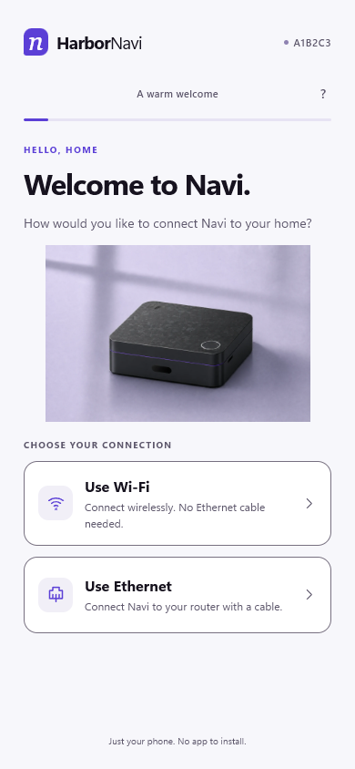
HARBOR INNOVATIONS / NAVI
English mobile concepts, rendered from the clickable prototype.
HarborDock’s purple palette. Nine setup screens, followed by device types and camera brands.

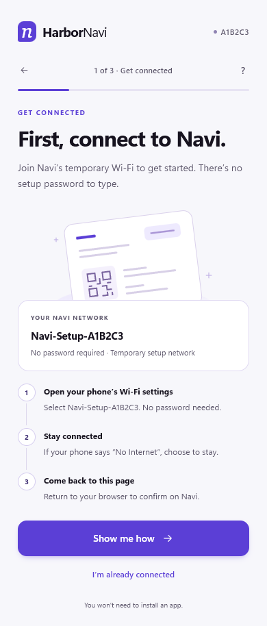
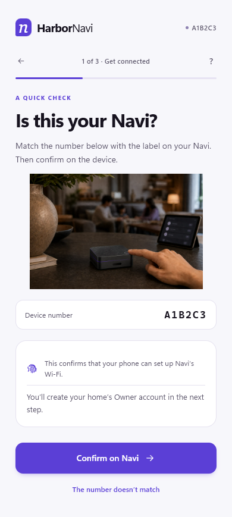
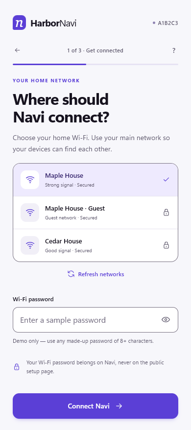
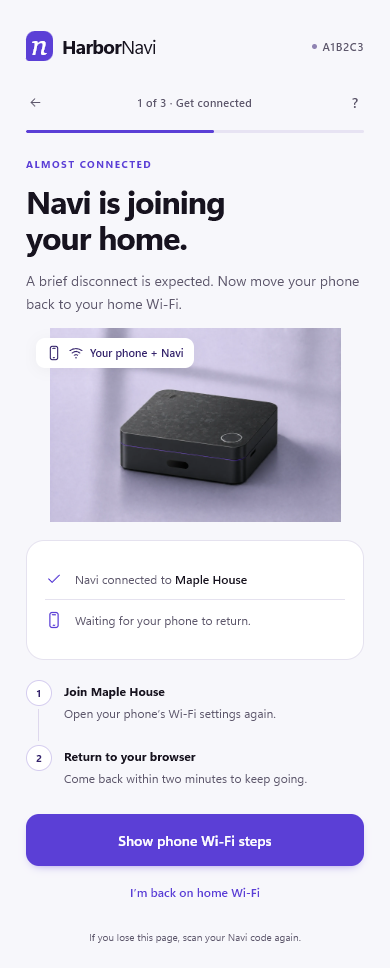
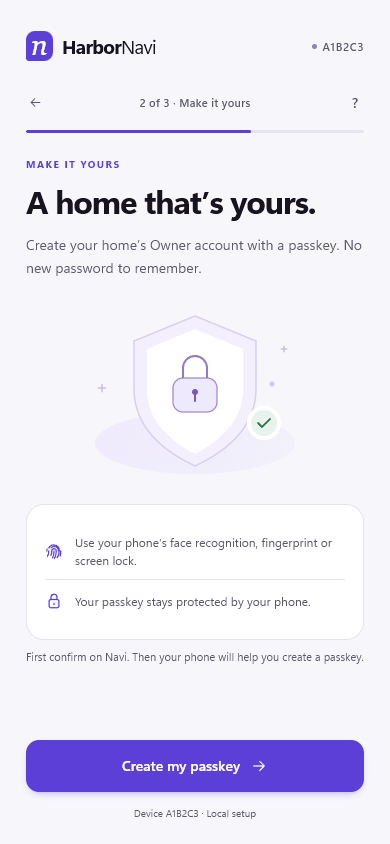
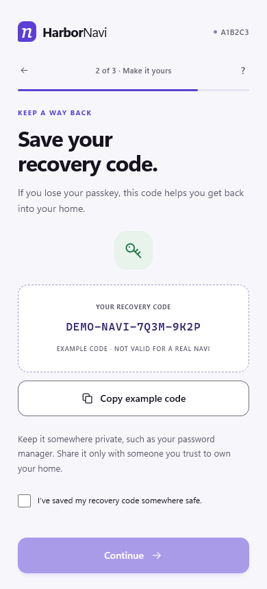
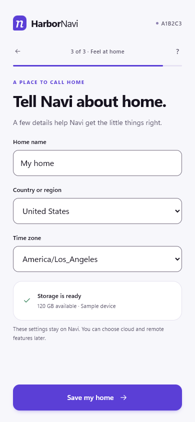
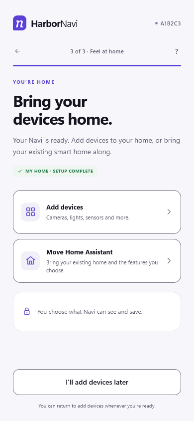
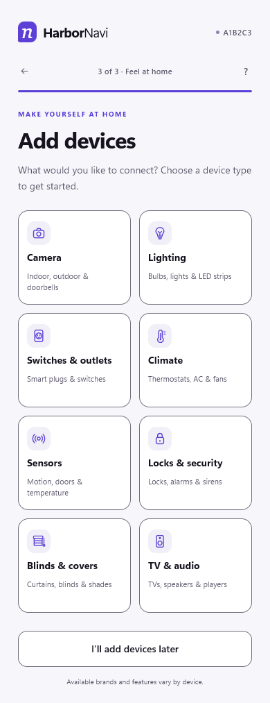
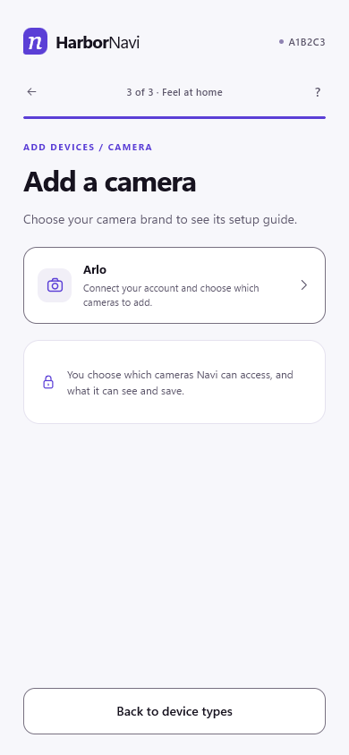
Recovery paths use the same pages and retain the setup progress.
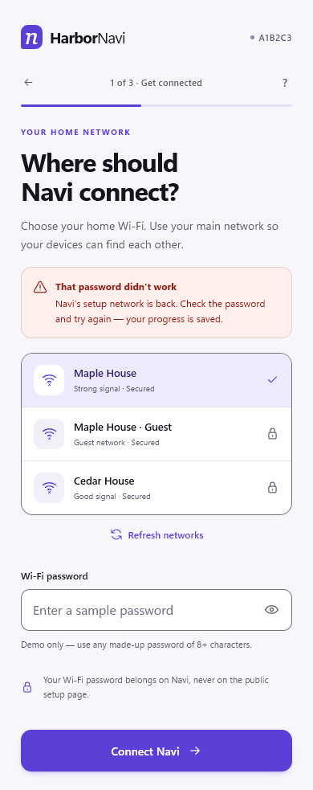
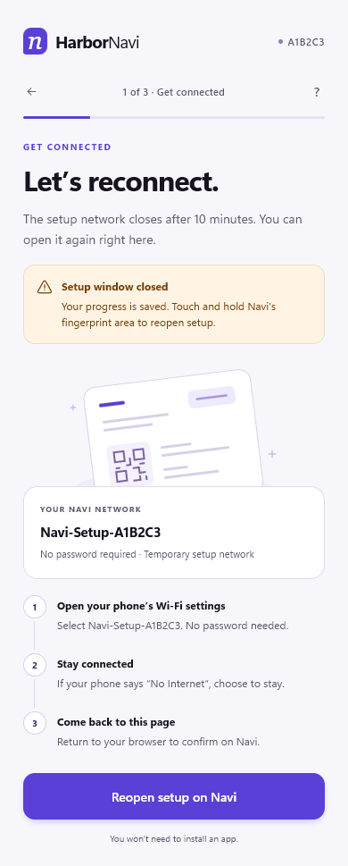
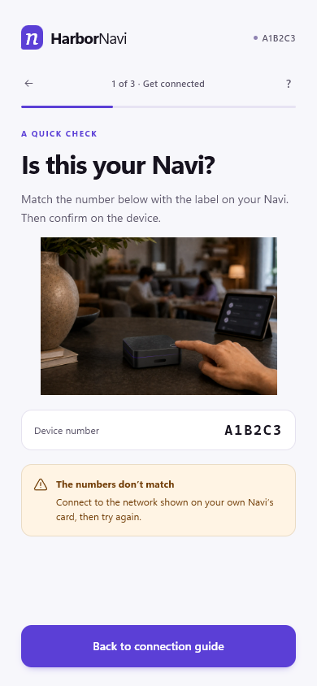
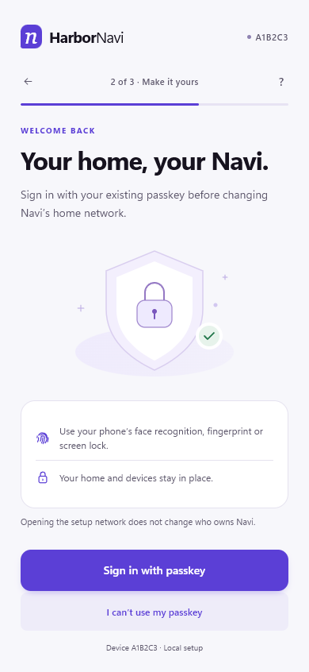
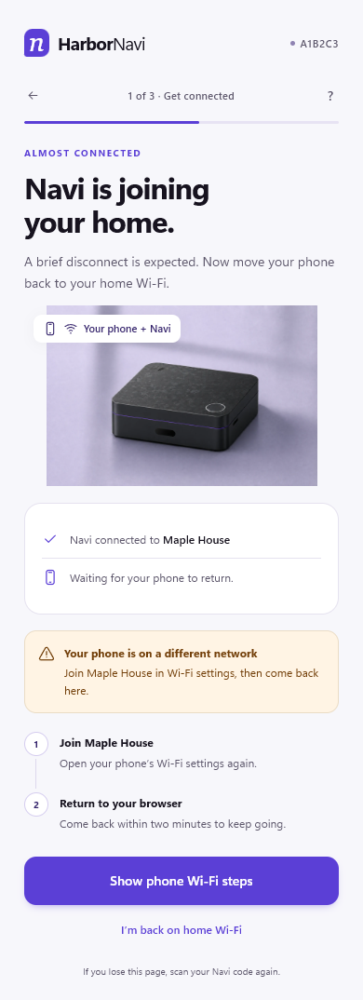
Concept prototype · Sample data only · Wi-Fi, device touch and passkey prompts are simulated.
Physical Wi-Fi, fingerprint gesture timing and local HTTPS require separate hardware validation.